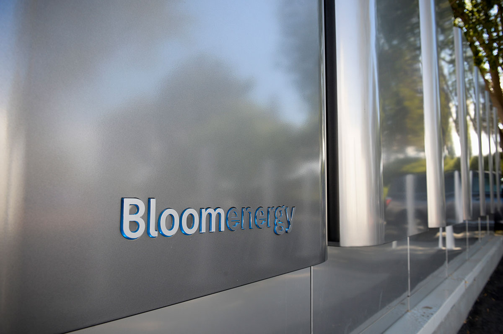
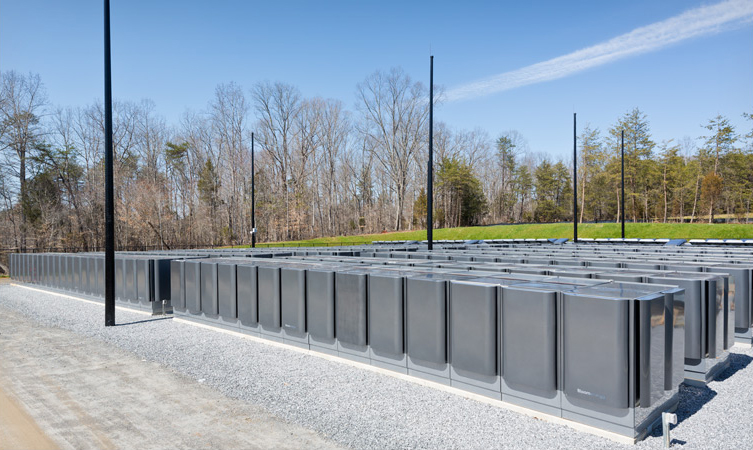
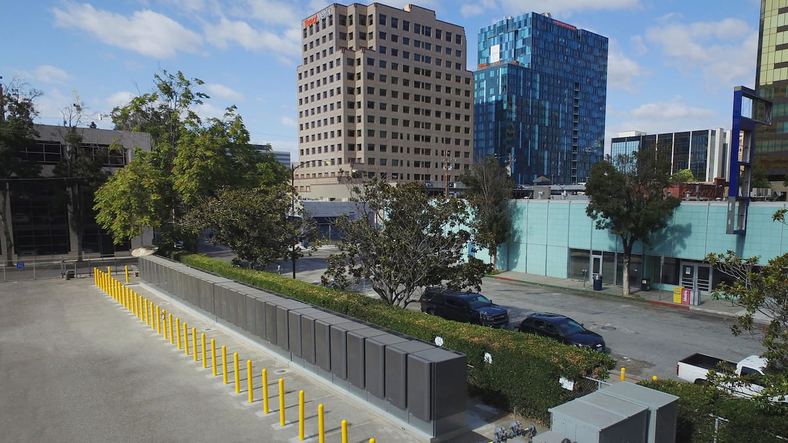

Bloom Energy (BE)
W kontekscie: Naziemny bottleneck energetyczny i sieciowy
Czym jest spółka. Bloom Energy projektuje i produkuje stacjonarne ogniwa paliwowe SOFC (Solid Oxide Fuel Cell - ogniwo paliwowe ze stałym, ceramicznym elektrolitem tlenkowym) pod marką Bloom Energy Server. Ogniwo to urządzenie, w którym paliwo (gaz ziemny, biogaz lub wodór) reaguje elektrochemicznie z tlenem i wytwarza prąd bez spalania, w wysokiej temperaturze (600-1000 stopni C). To daje wyższą sprawność i niższe emisje niż klasyczne generatory (🔵 strona produktowa Bloom Energy). Spółka wywodzi się z technologii rozwijanej pierwotnie dla NASA (konwersja CO2 na O2 na potrzeby misji marsjańskiej); założył ją KR Sridhar, a firma działa od 2001 r. (🔵 10-K FY2024, Impact Report 2025).
Dlaczego to ważne dla centrów danych. Sednem dzisiejszego wyścigu o moc dla AI nie jest najtańsza energia, lecz time-to-power - czas od decyzji do realnego prądu. Nowe przyłącze do sieci w USA więźnie w wieloletnich kolejkach przyłączeniowych i wieloletnich dostawach transformatorów, co rozwija wątek Kolejki przyłączeniowe i ograniczenia sieci oraz Brak transformatorów i switchgear: lead times. Energy Server stawiany onsite (za licznikiem) pozwala ten korek obejść: Bloom deklaruje dla data center wdrożenie w 90 dni, dostępność na poziomie 99,999% (tzw. five nines, czyli ok. 5 minut przestoju rocznie; nie mylić z baseloadem, który oznacza moc ciągłą 24/7) i skalowalność rzędu 20-500 MW (🔵 strona Bloom dla data center). Dla hyperscalerów i operatorów chmury GPU, którzy potrzebują mocy „teraz, a nie po wieloletnim oczekiwaniu", to bezpośrednia odpowiedź na bottleneck opisany w Zapotrzebowanie DC na moc i prognozy AI compute.
Gdzie Bloom plasuje się wśród źródeł baseload. Energy Server konkuruje z gazowym baseloadem i alternatywami opisanymi w Energia: baseload, powrót do gazu/jądra, SMR dla DC. Bloom podaje, że jego SOFC zużywają o 15-20% mniej paliwa niż turbiny gazowe (🟠 Utility Dive, 30 paź 2025), a wobec fotowoltaiki z magazynem przewaga jest przestrzenna - według 10-K solar wymaga ok. 125x więcej miejsca na tę samą moc, co czyni go nierealnym dla zagęszczonego kampusu DC (🔵 10-K FY2024).
Dla inwestora: przewaga Bloom jest funkcją kryzysu sieciowego - im dłuższe kolejki przyłączeniowe i lead-time transformatorów, tym cenniejszy „szybki" megawat onsite. Popyt jest więc mniej wrażliwy na cenę energii, a bardziej na samą dostępność mocy w terminie.
Materiały spółki
Grafiki z materiałów spółki / IR (prawa właściciela, użycie redakcyjne). Pełny rejestr:
Spolki/assets/_licencje.json.

Serwer energetyczny Bloom Energy Server ES5 - produktowe ujęcie urządzenia. Źródło: www.bloomenergy.com; licencja: materiały spółki / IR - prawa właściciela, użycie redakcyjne.

Instalacja Bloom Energy Server o mocy 10 MW w centrum danych Apple Maiden. Źródło: www.bloomenergy.com; licencja: materiały spółki / IR - prawa właściciela, użycie redakcyjne.

Instalacja Bloom Energy Server ES5 w obiekcie AT&T w San Jose. Źródło: www.bloomenergy.com; licencja: materiały spółki / IR - prawa właściciela, użycie redakcyjne.
Ekspozycja na temat w liczbach
Skala i dynamika. Przychód FY2025 (rok zakończony 31 grudnia 2025) wyniósł 2 024,0 mln USD, +37,3% r/r (z 1 473,9 mln USD), co spółka określa jako rekord napędzany „znaczącym wzrostem z branży data center AI" (🔵 Q4/FY2025 earnings release, 5 lutego 2026). Sam Q4 2025 to 777,7 mln USD, +35,9% r/r (vs 572,4 mln USD). Motorem jest linia produktowa (sprzedaż Energy Serverów): product revenue 1 531,3 mln USD, +41,1% r/r i 75,7% całego przychodu FY2025 (🔵 Q4/FY2025 earnings release). Nowszy odczyt potwierdza przyspieszenie: Q1 2026 przyniósł 751,1 mln USD przychodu, +130,4% r/r (w tym product revenue 653,3 mln USD, +208,4% r/r), a spółka podniosła guidance FY2026 do 3,4-3,8 mld USD (z wcześniejszych 3,1-3,3 mld USD), przy non-GAAP gross margin ~34% i non-GAAP operating income 600-750 mln USD (🔵 Q1 2026 earnings release, 28 kwietnia 2026).
xychart-beta
title "Przychod Bloom wg roku obrotowego (mln USD)"
x-axis ["FY2024", "FY2025"]
y-axis "mln USD" 0 --> 2200
bar [1474, 2024]
Rys. - Trajektoria przychodu rocznego; FY2025 to +37,3% r/r. Dane: 🔵 Bloom Q4/FY2025 earnings release.
Ile z tego to data centers? NIE UJAWNIONE wprost. Bloom ma jeden raportowany segment operacyjny i dzieli przychód jedynie na cztery linie: Product, Installation, Service, Electricity - bez osobnej alokacji do data center (🔵 Q4/FY2025 earnings release). Dostępne proxy to przychód od podmiotów powiązanych (related party): 892,0 mln USD = 44,1% przychodu FY2025, a w samym Q4 2025 aż 574,2 mln USD = 73,8% przychodu kwartalnego (🔵 Q4/FY2025 earnings release); w Q1 2026 było to 373,3 mln USD = 49,7% przychodu (🔵 Q1 2026 earnings release / 10-Q Q1 2026, 28 kwietnia 2026). Uwaga interpretacyjna: ta liczba nie jest tożsama z „przychodem z data center". Kluczowy niuans składu: SK ecoplant przestał być podmiotem powiązanym 10 lipca 2025 (udział spadł do 5,8%, potem 2,9% na 30 września 2025 i 2,5% na 31 grudnia 2025), więc od H2 2025 pozycja related party niemal w całości pochodzi z Fund JVs z Brookfieldem (AI factories) - w Q3 2025 cały related party revenue 288,0 mln USD (255,7 mln product + 32,3 mln installation) pochodził z Fund JVs z Brookfieldem (🔵 10-Q Q3 2025 Note 12; 🔵 10-K FY2025).
xychart-beta
title "Related party jako udzial przychodu (%, dwa rozne okresy)"
x-axis ["Q4 2025", "FY2025"]
y-axis "% przychodu" 0 --> 100
bar [73.8, 44.1]
Rys. - Udział podmiotów powiązanych w przychodzie w Q4 2025 i w całym FY2025 (dwa różne okresy, nie części jednej całości). Wzrost udziału related party pokazuje koncentrację przychodu, ale nie pozwala wydzielić części DC/AI (pozycja zawiera też koreańskiego partnera SK ecoplant). Dane: 🔵 Bloom Q4/FY2025 earnings release.
Backlog. Backlog całkowity to ~20 mld USD (stan na 5 lutego 2026), w tym product backlog ~6 mld USD (5 lutego 2026) z dynamiką ~2,5x r/r; backlog serwisowy podawano na 9,6 mld USD (prezentacja luty 2025 - dane starsze, z innego okresu, więc nie uzgadniają się bezpośrednio z aktualnym total backlogiem; nowszej dezagregacji brak) (🔵 Q4/FY2025 earnings release; 🔵 prezentacja inwestorska). Backlog to metryka zarządcza, szersza niż RPO. Twarde RPO (niespełnione zobowiązania umowne) z 10-K FY2025 jest znacznie niższe: 394,4 mln USD dla sprzedaży produktu i instalacji (rozpoznanie w ciągu 1-2 lat, zgodnie z harmonogramami wdrożeń klientów) oraz 25,0 mln USD dla umów serwisowych / deferred service (rozpoznanie w okresie pozostałego kontraktu, 1-26 lat) (🔵 10-K FY2025, Note - Revenue Recognition, 31 grudnia 2025). Rozbieżność backlog (~20 mld USD) vs RPO (~419 mln USD) wynika z tego, że duża część zamówień ramowych nie spełnia jeszcze definicji wiążącego zobowiązania w rozumieniu rachunkowości przychodu; product backlog ~6 mld USD traktujemy więc jako wskaźnik potencjału, nie twardego zobowiązania.
Dla inwestora: ekspozycja na temat jest realna, ale „ukryta" w jednej linii product revenue i w pozycji related party. Brak osobnego segmentu DC oznacza, że inwestor nie ma czystego licznika na to, jak duża część biznesu zależy od jednego, cyklicznego popytu (budowa AI data center).
Kluczowe umowy/wdrozenia - co znacza
Bloom buduje ekspozycję na DC przez kilka dużych ram kontraktowych. Kluczowa dystynkcja: MSA (master service agreement) i MOU/framework ustalają warunki i pułap, ale dopiero kolejne zamówienia są wiążącym wolumenem - „GW w nagłówku" to górny limit, nie gwarantowany odbiór.
- Oracle (umowa pierwotnie lipiec 2025, rozszerzenie 13 kwietnia 2026): master service agreement do 2,8 GW, z czego 1,2 GW „contracted and deploying" (zakontraktowane i w trakcie wdrażania), a pozostałe ~1,6 GW to intencja w ramach MSA; Bloom ma być primary oraz secondary power source dla AI data center Oracle, z targetem wdrożenia w 90 dni; wdrożenia trwają i są kontynuowane w 2027 (🔵 Bloom IR, 13 kwietnia 2026). W ramach tej współpracy Oracle ogłosił (kwiecień 2026) Project Jupiter - kampus AI o mocy 2,45 GW zasilany „w 100% Bloom" (zastępujący turbiny i diesle); wartość kontraktu NIE UJAWNIONA (🟠 Motley Fool earnings transcript, 28 kwietnia 2026).
- Brookfield Asset Management (13 października 2025): strategiczne partnerstwo do 5 mld USD; Bloom jako preferowany dostawca onsite power dla „AI factories" Brookfield (kwota i rola potwierdzone w komunikacie Bloom). Dane „framework do 1 GW" oraz „pierwszy projekt 55 MW przy ~140 mln USD" pochodzą ze źródła wtórnego i nie zostały potwierdzone w komunikacie IR, więc traktujemy je ostrożnie (🔵 Bloom IR; 🟠 Dow Jones via Morningstar).
- American Electric Power / AEP (listopad 2024): umowa dostawcza do 1 GW; pierwsze zamówienie 100 MW dla AI data centers, z kolejnymi w 2025 (🔵 Bloom IR).
- Equinix (20 lutego 2025): rozszerzenie 10-letniej współpracy (start: 1 MW pilot w 2015) o ponad 100 MW w 19 data center IBX (~75 MW operacyjne, ~30 MW w budowie). Wartość NIE UJAWNIONA (🔵 Bloom IR).
- Nebius (20 maja 2026): Master Fuel Cell Capacity Agreement na 328 MW mocy zainstalowanej (faza 1), struktura 3-fazowa po 10 lat każda; wartość do 2,6 mld USD opłat serwisowych wg dokumentu 6-K Nebius; pierwszy projekt operacyjny w 2026 (🔵 Nebius IR; 🟠 Nebius 6-K). To nowy kontrakt po Q1 2026.
- CoreWeave (neo-cloud): wdrożenie ogniw Bloom w data center Volo (Illinois) do obsługi chmury AI (commissioning Q3 2025) (🟠 prasa branżowa).
- Intel (maj 2024): power capacity agreement dla HPC data center w Santa Clara, opisywany jako największy fuel-cell-powered HPC DC w Dolinie Krzemowej; dokładna moc NIE UJAWNIONA (🔵 Bloom IR).
Jako proxy łącznej skali DC część źródeł branżowych (BofA via TipRanks) podaje, że Bloom wdrożył ponad 400 MW w samych data center do połowy 2025 r.; liczba ta nie jest potwierdzona w oryginalnym artykule DCD, więc traktujemy ją jako niezweryfikowany szacunek analityka (🟠 prasa/analitycy, niska pewność).
xychart-beta
title "Pulapy frameworkow vs wolumen firmowy (GW)"
x-axis ["Oracle MSA (pulap)", "Oracle firm", "AEP (pulap)", "Brookfield framework", "Nebius faza 1 firm"]
y-axis "GW" 0 --> 3
bar [2.8, 1.2, 1.0, 1.0, 0.328]
Rys. - Pułapy MSA/framework (Oracle 2,8 GW, AEP 1 GW, Brookfield 1 GW) wobec części już firmowo zakontraktowanej (Oracle 1,2 GW, Nebius faza 1 0,328 GW); pułapy to górne limity, nie gwarantowany odbiór. Dane: 🔵 Bloom IR (Oracle, AEP, Nebius), 🟠 Dow Jones/Morningstar (Brookfield).
Dla inwestora: „2,8 GW Oracle" i „1 GW AEP" to różne kategorie pewności - twarde jest 1,2 GW Oracle plus startowe 100 MW AEP plus 328 MW Nebius (faza 1), reszta to opcje warunkowe. Materializacja tych pułapów decyduje o tym, czy ~6 mld USD product backlogu zamieni się w przychód. Wg zarządu więcej niż połowa obecnego backlogu DC przypisana jest klientom innym niż Oracle (hyperscalerzy, neo-cloudy, colocation) (🟠 Motley Fool earnings transcript, 28 kwietnia 2026).
Pozycja rynkowa i udzialy
Bloom określa się w 10-K FY2024 jako światowy lider stacjonarnych ogniw paliwowych wg udziału rynkowego, choć bez podania konkretnej liczby (🔵 10-K FY2024). Szacunki zewnętrzne wskazują na silną pozycję Bloom, ale udział mocno zależy od definicji rynku:
| Definicja rynku | Udział Bloom | Okres | Źródło |
|---|---|---|---|
| Prime power stationary fuel cells | ponad 18% (z płatnego raportu, brak publicznego potwierdzenia - niska pewność) | 2025 | 🟠 GM Insights |
| North American stationary SOFC shipments | ~60% | 2025 | 🟠 Mordor Intelligence |
| Global fuel cell for data center market | 20-24% | 2025 | 🟠 Future Market Insights |
| Global SOFC market - top 3 producentów (Bloom w grupie liderów) | top 3 ~87-88% | 2024/2025 | 🟠 QYResearch / Intel Market Research |
Twardym faktem zamiast szacunku jest zainstalowana baza: ponad 1,5 GW Energy Serverów w ponad 1 200 lokalizacjach (stan Q3/Q4 2025) - to namacalna miara skali wdrożeniowej i bariery doświadczenia (🔵 Q3 2025 earnings release / About Bloom). Liczba „9 krajów" pochodzi ze źródła wtórnego (nie z oficjalnych komunikatów Bloom), więc traktujemy ją ostrożnie (🟠 prasa branżowa).
Bariery wejścia są przede wszystkim własnościowo-technologiczne. Na 31 grudnia 2025 Bloom miał 380 aktywnych patentów utility US oraz 183 wnioski US, a także 252 aktywne patenty międzynarodowe i 416 wniosków międzynarodowych (🔵 10-K FY2025). Skumulowane wydatki R&D przekroczyły 1,2 mld USD, w zespole R&D pracuje 59 doktorów, a globalne zatrudnienie to 2 214 FTE na koniec FY2025 (1 752 USA, 395 Indie, 67 inne) (🔵 10-K FY2025; prezentacja luty 2026). Zdolność produkcyjna wynosi dziś ~1 GW/rok z planem wzrostu do 2 GW do końca 2026 r. (inwestycja ~100 mln USD; fabryki skalowalne do 5 GW) (🟠 Utility Dive, 30 paź 2025; 🔵 prezentacja luty 2026).
Dla inwestora: dominacja Bloom jest jakościowo niekwestionowana (lider, ~60% północnoamerykańskich dostaw fuel cell do DC), ale rozstrzał szacunków (18% vs 20-24% vs 60%) pokazuje, że „udział rynkowy" zależy od tego, jak wąsko zdefiniujemy rynek - twardszą kotwicą jest baza ponad 1,5 GW i portfel patentowy.
Mechanika konkurencji - na osiach
Bloom konkuruje na dwóch frontach: z innymi ogniwami paliwowymi oraz z alternatywnymi źródłami mocy dla DC.
Inne ogniwa paliwowe. Najbliższy notowany rywal to FuelCell Energy (FCEL) - technologia MCFC (węglany stopione) z integracją wychwytu CO2, robiący pivot na data center. Skala jest jednak ułamkiem Bloom: przychód FY2025 158,2 mln USD (+41% r/r) wobec 2 024,0 mln USD Bloom oraz strata operacyjna (192,3) mln USD - spółka wciąż nierentowna; podawany backlog ~1,19 mld USD nie pojawia się w cytowanym źródle, więc wymaga osobnego potwierdzenia (🟠 prasa o wynikach FCEL). Ballard Power (BLDP), technologia PEM, miał przychód ~99,4 mln USD (2025) i ~8-11% rynku DC fuel cell; PEM startuje szybko, ale ma niższą sprawność od SOFC i obciążenie kosztem platyny (🟠 GM Insights/FMI). Doosan Fuel Cell / HyAxiom (PAFC + SOFC) z przychodem 9M2025 ~213 mln USD dominuje w Korei/Japonii (~12-16% rynku DC fuel cell) (🟠 FMI/GM Insights). Plug Power (PLUG) ma ~15-18% rynku DC fuel cell, ale głównie w edge/telecom; PEM jest zwykle słabiej dopasowany do długotrwałego prime power baseload niż SOFC, m.in. ze względu na niższą sprawność i obciążenie kosztem platyny (🟠 FMI). Ceres Power i Mitsubishi/Kyocera to gracze niszowi/regionalni o mniejszej, niekwantyfikowanej tu bazie.
xychart-beta
title "Przychod konkurentow fuel cell vs Bloom (mln USD, FY vs 9M - orientacyjnie)"
x-axis ["Bloom FY2025", "Doosan 9M2025", "FuelCell FY2025", "Ballard 2025"]
y-axis "mln USD" 0 --> 2200
bar [2024, 213, 158, 99]
Rys. - Skala przychodu Bloom wobec głównych rywali fuel cell; uwaga: Doosan to 9M2025, pozostali FY2025, więc okresy nie są w pełni porównywalne (porównanie orientacyjne). Dane: 🔵 Bloom Q4/FY2025; 🟠 GM Insights, FMI, prasa o wynikach FCEL.
Alternatywne źródła mocy. Tu konkurencja toczy się na osiach time-to-power, emisji i kosztu:
- Turbiny gazowe / silniki (GE Vernova, Siemens Energy, Wärtsilä, Cummins) - niższy capex w części konfiguracji i szybki start, ale dłuższe pozwolenia, wyższe emisje NOx/SOx/CO2 i niższa sprawność niż SOFC (🔵 10-K FY2024). Bloom deklaruje zużycie paliwa o 15-20% niższe niż turbiny (🟠 Utility Dive). Twarde dane emisyjne z datasheetu Energy Server 6.5 (praca na gazie ziemnym): CO2 679-833 lbs/MWh (308-378 kg/MWh), NOx 0,003 lbs/MWh, CO 0,013 lbs/MWh, VOC 0,01 lbs/MWh, SOx pomijalne; sprawność elektryczna 53-65% (LHV net AC), brak zużycia wody w normalnej pracy, hałas <65 dBA z 3 m (🔵 Bloom Energy Server 6.5 datasheet, luty 2026). W komunikacie AEP Bloom podaje o 34% niższe CO2 niż wypierane krańcowe źródła generacji w PJM oraz praktyczną eliminację SOx i NOx (🔵 Bloom IR, 14 listopada 2024). Dla biogazu Bloom deklaruje carbon-neutral (directed biogas), a dla wodoru zero emisji bezpośrednich - dokładne współczynniki dla biogazu i wodoru pozostają NIE UJAWNIONE (Bloom podaje je na żądanie) (🔵 datasheet; 🔵 technical note).
- BESS (Tesla Megapack, Fluence, CATL) - tańszy backup i smoothing, błyskawiczne wdrożenie, ale typowo 4h zapasu, więc komplement, nie substytut dla mocy ciągłej 24/7 (capex 250-330 USD/kWh dla systemu 100 MWh / 4h) (🟠 prasa/analitycy).
- SMR (NuScale, Oklo, Kairos) - zeroemisyjny baseload, ale pierwsze wdrożenia dopiero po 2030 i długa certyfikacja - rozwija to wątek Energia: baseload, powrót do gazu/jądra, SMR dla DC.
- Fotowoltaika + magazyn - niski LCOE, ale intermitencja (brak 24/7) i wymóg ~125x większej powierzchni niż Bloom (🔵 10-K FY2024).
Dla inwestora: Bloom ma deklarowaną przewagę time-to-power (90 dni) i niższe emisje vs wybrane generatory oraz niezależność od sieci, a nie najniższy koszt (przewaga kosztowa nie jest tezą notatki) - to atut, dopóki sieci są zatkane. Słabsze punkty to zależność od gazu ziemnego i wyższy upfront capex niż BESS w zastosowaniach wyłącznie backup. Główni rywale fuel cell są dziś o rząd wielkości mniejsi przychodowo.
Koncentracja odbiorcow i ryzyka z mechanizmem
Koncentracja odbiorców jest ekstremalna i to główne ryzyko strukturalne. Wg 10-K FY2025 trzech klientów (pierwszy to podmiot powiązany) odpowiadało za 43%, 13% i 12% przychodu (łącznie 68%) - to wzrost wobec 23%, 16% i 14% (łącznie 53%) w FY2024 (🔵 10-K FY2025). W samym Q4 2025 related party revenue sięgnęło 73,8% przychodu kwartalnego, a w Q1 2026 49,7% (🔵 Q4/FY2025 earnings release; 🔵 Q1 2026 earnings release). Mechanizm: utrata lub opóźnienie jednego dużego kontraktu (Brookfield, Oracle, AEP) ma bezpośredni, materialny wpływ na przychód i backlog. Po tym, jak SK ecoplant przestał być podmiotem powiązanym 10 lipca 2025 (udział spadł do 2,5% na 31 grudnia 2025), pozycja related party od H2 2025 niemal w całości przechodzi przez struktury finansujące Brookfielda (AI data centers) - ryzyko jest więc tyleż popytowe, co zależne od decyzji inwestycyjnych pojedynczych partnerów. Bloom raportuje też equity in loss of unconsolidated affiliates (Fund JVs) 40,4 mln USD za FY2025 i 17,0 mln USD w Q1 2026 (🔵 10-K FY2025; 🔵 10-Q Q1 2026).
pie title Koncentracja klientow wg 10-K FY2025 (% przychodu)
"Klient 1 (related party)" : 43
"Klient 2" : 13
"Klient 3" : 12
"Pozostali" : 32
Rys. - Trzej najwięksi klienci = 68% przychodu (FY2025), wobec 53% w FY2024; w samym Q4 2025 pozycja related party to 73,8%. Dane: 🔵 Bloom 10-K FY2025 / Q4/FY2025 earnings release.
Pozostałe ryzyka z mechanizmem:
- Single-source / limited-source suppliers. 10-K wskazuje „sole or limited source suppliers" dla kluczowych komponentów SOFC (m.in. separator plates); problem dostawcy może wstrzymać produkcję i uderzyć w time-to-market oraz marże. Wtórne źródła chińskie wskazują CCTC jako kluczowego dostawcę separator plates - traktowane jako proxy, nie potwierdzenie (🔵 10-K FY2024; 🟠 Xueqiu).
- Execution risk / skalowanie produkcji. Podwojenie mocy z 1 GW do 2 GW do końca 2026 wymaga ~100 mln USD+ capex; opóźnienie oznacza utratę zamówień AI DC (🟠 Utility Dive, 30 paź 2025).
- Długi cykl sprzedaży i instalacji. 10-K mówi o „lengthy sales and installation cycle" i anulacjach rzędu 5-10% backlogu w danym okresie - co bezpośrednio przesuwa timing przychodu i cash flow (🔵 10-K FY2024). Czynnikiem łagodzącym jest serwis: zarząd podaje 100% service attach rate (każda sprzedaż produktu wiąże się z umową serwisową), a średni czas trwania umów DC to 10-15 lat - to powtarzalny strumień przychodu, choć z rocznym prawem rozwiązania przez klienta (🟠 Motley Fool earnings transcript, 28 kwietnia 2026; 🔵 10-K FY2025).
- Regulacje / podatki / cła. Zmiany w ITC (Investment Tax Credit, federalna ulga inwestycyjna USA), IRA, OBBBA (nowy 30% ITC dla fuel cell property, lipiec 2025), cła na komponenty i regulacje w Korei mogą zmienić ekonomikę projektów i marże (🔵 10-K FY2024; earnings releases).
- Rozwodnienie / zadłużenie. Convertible senior notes na 2,5 mld USD (październik 2025), warrant dla Oracle na 3,53 mln akcji po 113,28 USD (~400 mln USD), SBC 139,4 mln USD w FY2025 i recourse debt 2,61 mld USD zwiększają potencjalną liczbę akcji i koszt obsługi długu (🔵 Q4/FY2025 earnings release; 🟠 prasa).
- Cykl AI. Bloom jawnie wymienia ryzyko „any actual or perceived slowdown in the adoption of AI" prowadzące do wolniejszej ekspansji DC i spadku popytu na onsite power (🔵 Q4/FY2025 earnings release).
- Gaz ziemny vs cele ESG. Energy Servery działają głównie na gazie; krytyka śladu węglowego doprowadziła do zerwania kontraktu z Amazonem na 3 data center w Oregonie w 2024 r. - „hydrogen-ready" pozostaje deklaracją techniczną (🟠 prasa branżowa).
Strukturalnie Bloom pozostaje nierentowny na poziomie GAAP: strata netto przypisana akcjonariuszom FY2025 to (88,4) mln USD (vs (29,2) mln USD w FY2024), przy skumulowanym deficycie (3 987,0) mln USD - choć adjusted EBITDA (skorygowany wynik EBITDA, czyli zysk przed odsetkami, podatkami i amortyzacją; metryka non-GAAP) urosło do 271,6 mln USD, a przepływy operacyjne były dodatnie drugi rok z rzędu (113,9 mln USD) (🔵 Q4/FY2025 earnings release).
Dla inwestora: prawie 3/4 przychodu Q4 2025 przeszło przez podmioty powiązane (73,8% to agregat related party, bez publicznego rozbicia na Brookfield/SK ecoplant/JV) - to koncentracja, która czyni przychód wrażliwym na decyzje kilku partnerów. Cała teza „szybkiego megawata" działa, dopóki kolejki sieciowe są długie; gdy turbiny/silniki wrócą do krótszych terminów, główna przewaga czasowa Bloom słabnie.
Powiązane spółki
Inne notowane spółki z raportu dzielące z tą firmą co najmniej jeden wątek tematyczny (wspólny rynek, technologia lub łańcuch wartości).
- Constellation Energy Corporation (CEG) - Największy operator floty jądrowej w USA (PPA z hyperskalerami)
Wspólne wątki: Naziemny bottleneck. - Eaton Corporation plc (ETN) - Zasilanie DC (UPS, switchgear) + chłodzenie (Boyd Thermal)
Wspólne wątki: Naziemny bottleneck. - GE Vernova Inc. (GEV) - Turbiny gazowe i infrastruktura sieciowa dla DC
Wspólne wątki: Naziemny bottleneck. - Oklo Inc. (OKLO) - Mikroreaktory (SMR/fission) na potrzeby DC
Wspólne wątki: Naziemny bottleneck. - Schneider Electric SE (SU) - Zasilanie i chłodzenie DC (EcoStruxure, Motivair)
Wspólne wątki: Naziemny bottleneck. - Siemens Energy AG (ENR) - Turbiny gazowe i technologie sieciowe (EU)
Wspólne wątki: Naziemny bottleneck. - Talen Energy Corporation (TLN) - Energia jądrowa (Susquehanna), sąsiedztwo z DC
Wspólne wątki: Naziemny bottleneck. - Vertiv Holdings Co (VRT) - Zasilanie i precyzyjne/cieczowe chłodzenie DC
Wspólne wątki: Naziemny bottleneck.
Slowniczek
Terminy techniczne linkowane są do wspólnego pliku Słownik (m.in. SOFC, baseload, time-to-power, backlog, RPO, related party, PPA, MSA, MOU, hyperscaler, neo-cloud, BESS, SMR, warrant, GAAP / non-GAAP). Poniżej lokalne, spółkowo-specyficzne pojęcia:
- Bloom Energy Server / Bloom Box - modułowa platforma SOFC o mocy od setek kW do setek MW (wersja ES-5000: typowo 100 kW - 1 MW+); produkty od 2025 gotowe do pracy z 800 V DC.
- Hot box - hermetyczna, gorąca komora ze stosem ogniw, serce Energy Servera.
- Related party revenue - przychód od podmiotów powiązanych (Brookfield, SK ecoplant, JV); raportowany osobno.
- ITC / IRA / OBBBA - federalna ulga inwestycyjna USA / ustawa klimatyczna 2022 (rozszerzyła ITC dla fuel cells) / ustawa lipiec 2025 z nowym 30% ITC dla fuel cell property.
- Five nines (99,999%) - dostępność zasilania na poziomie ok. 5 minut przestoju rocznie.
- 800 V DC ready - system gotowy do bezpośredniego zasilania DC prądem stałym 800 V, omijając straty konwersji AC/DC.
Linkują tutaj
10 powiązanych notatek
- Mapa raportu Orbitalne / kosmiczne centra danych
- Sekcja Naziemny bottleneck energetyczny i sieciowy
- Spółka Constellation Energy (CEG)
- Spółka Eaton (ETN)
- Spółka GE Vernova (GEV)
- Spółka Oklo (OKLO)
- Spółka Schneider Electric (SU)
- Spółka Siemens Energy (ENR)
- Spółka Talen Energy (TLN)
- Spółka Vertiv (VRT)